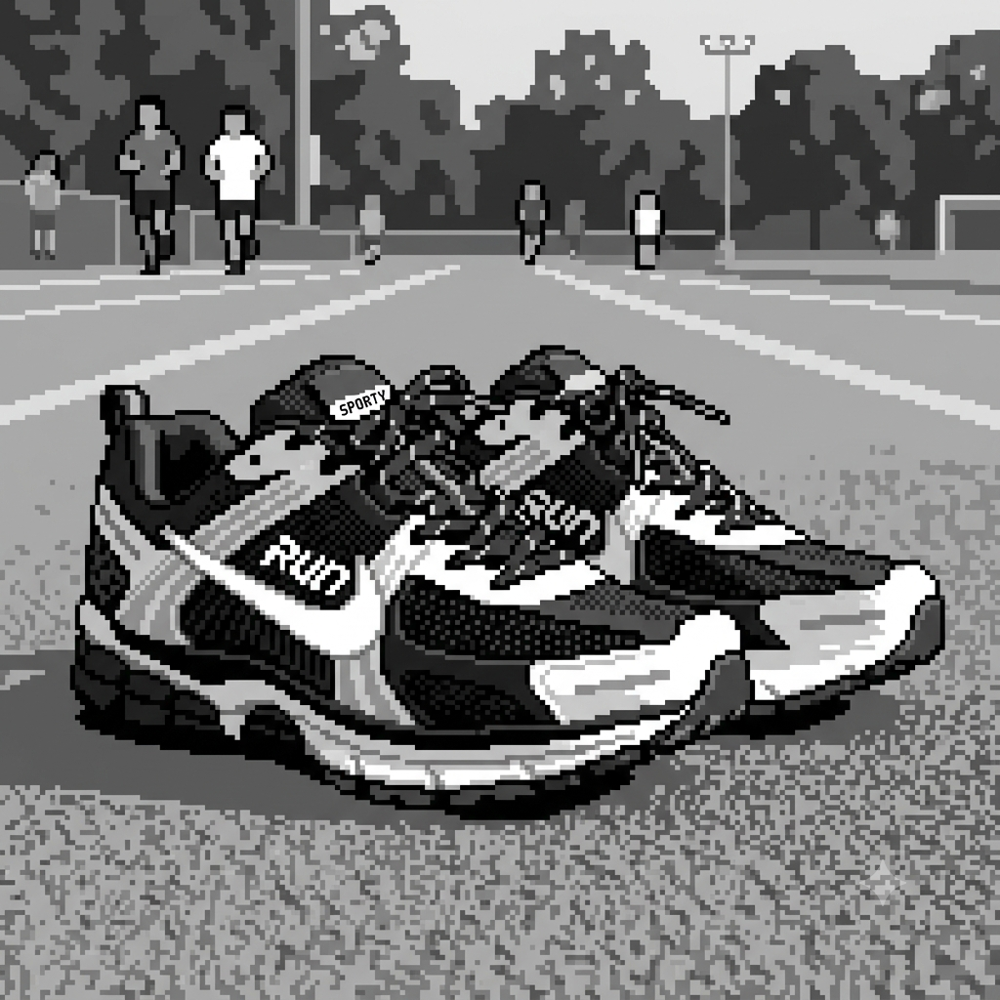

Meu primeiro post
por: Yonaiker Betancourt
Boas-Vindas ao meu Blog! Aqui vou compaltihar dicas de tenis esportivos da area de esportes
vou compaltilhar meus conhecimentos sobre tenis originais

por: Yonaiker Betancourt
Boas-Vindas ao meu Blog! Aqui vou compaltihar dicas de tenis esportivos da area de esportes